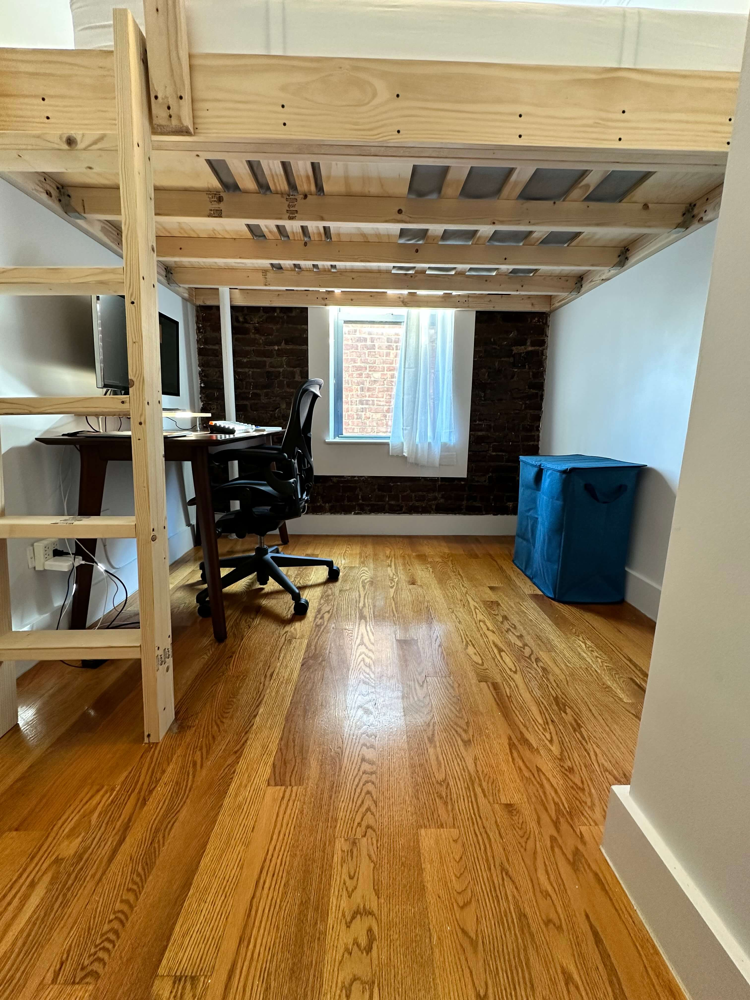
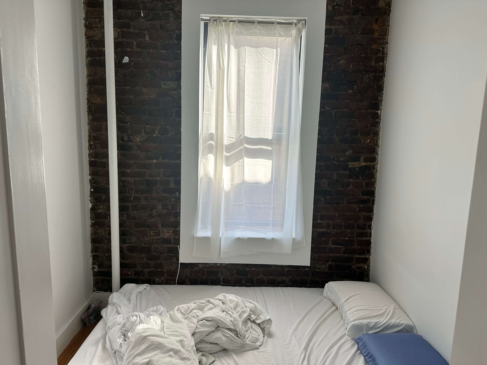
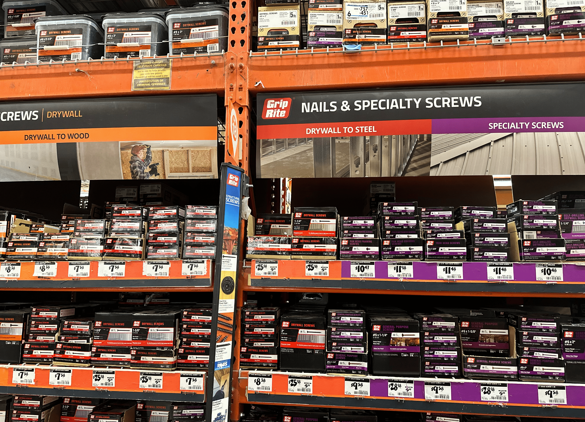
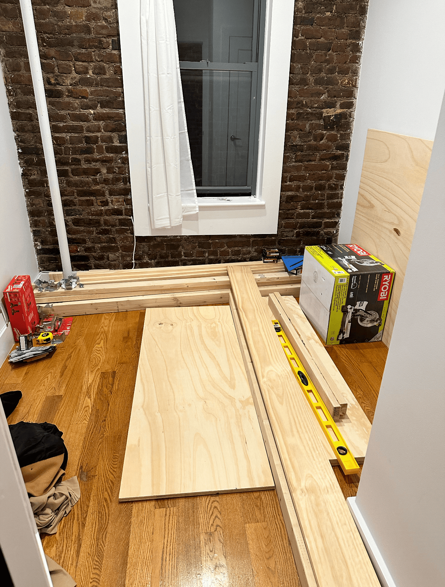
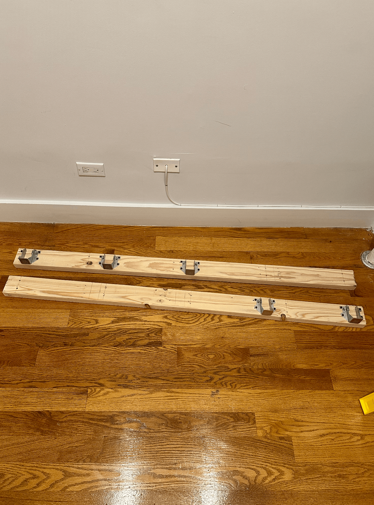
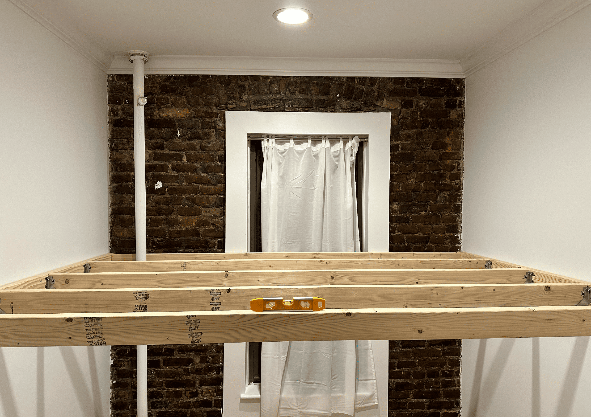
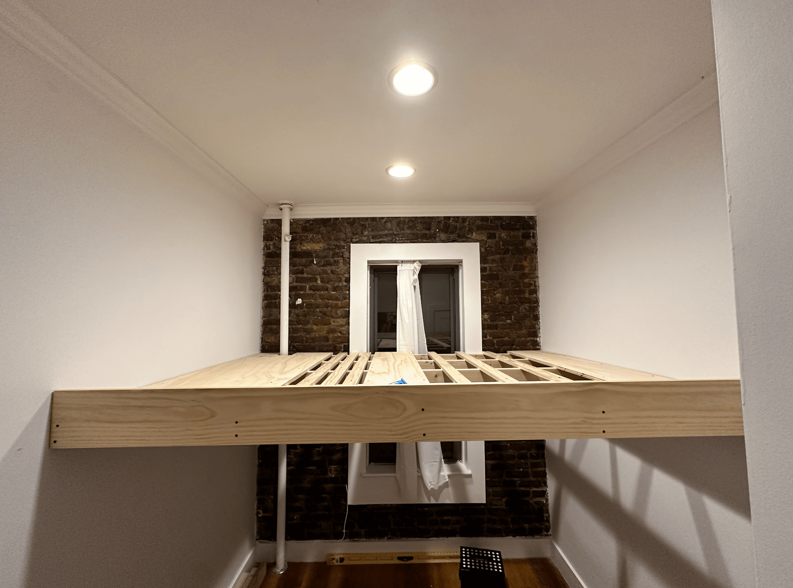
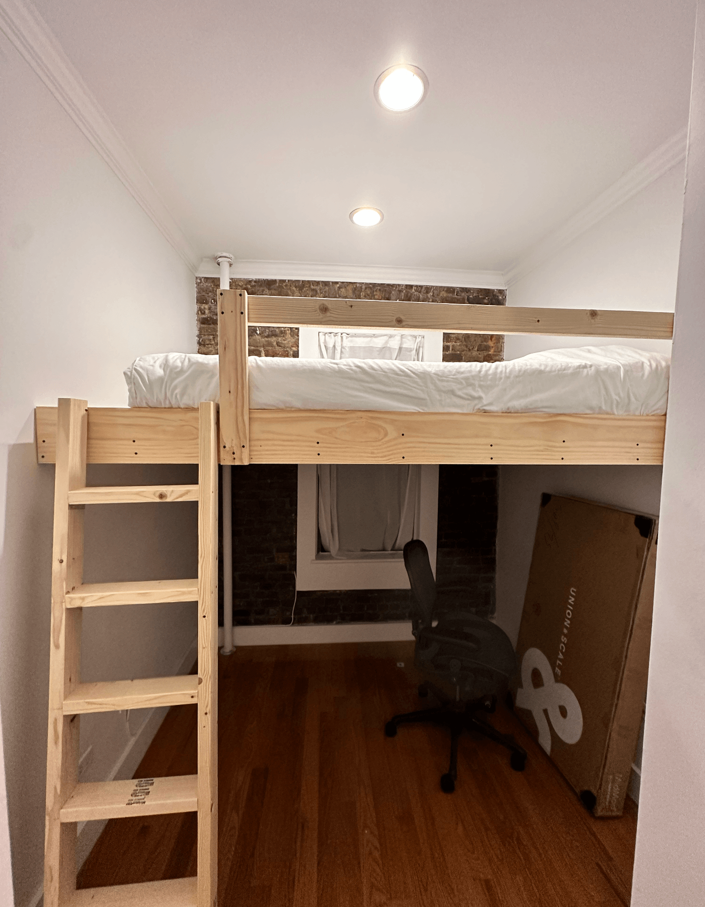
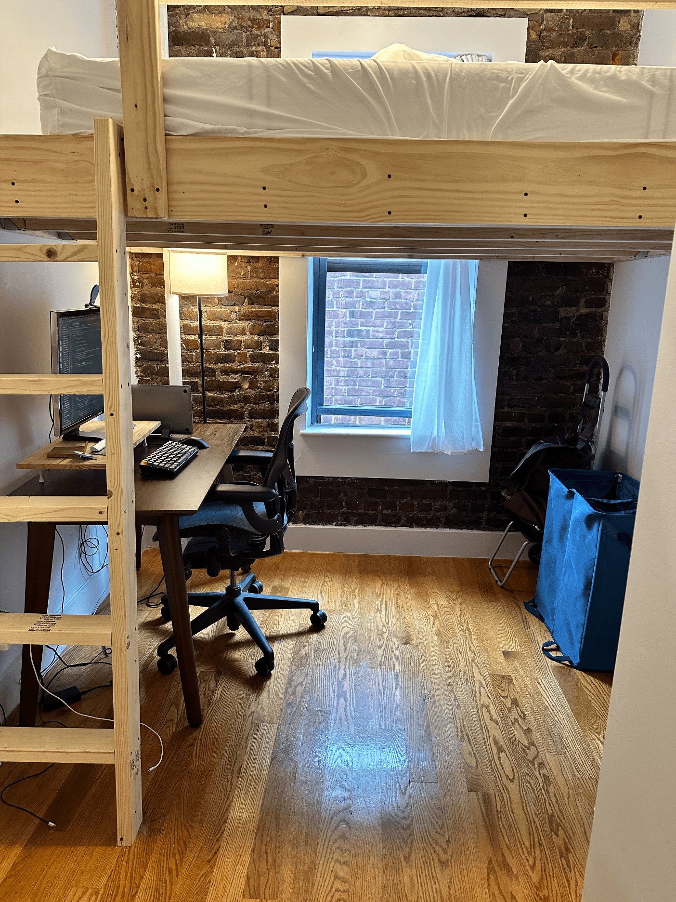
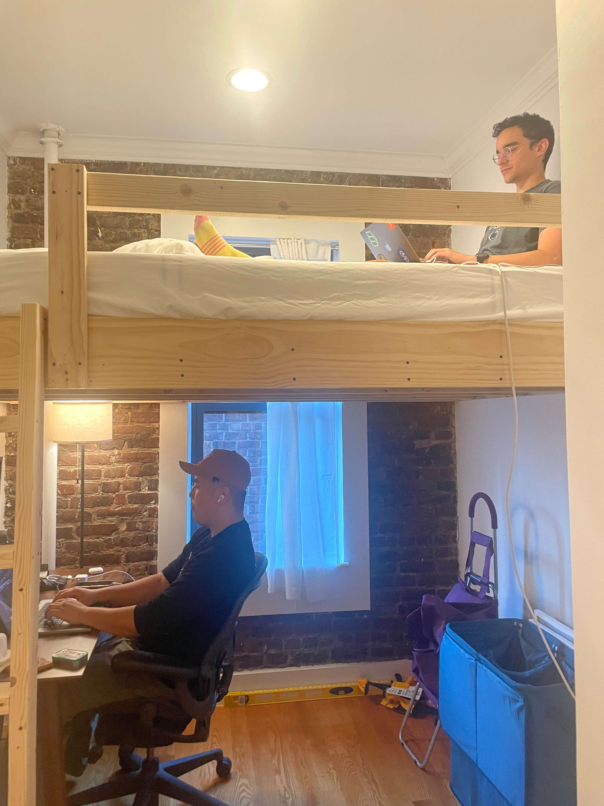

How I built a loft in my NYC apartment

In October my girlfriend and I made the move from Seattle to NYC. But with both of us working from home… the realities of the Manhattan housing market soon hit us.
Despite our best attempts at getting a place within our budget big enough for living and working, what we really got was an apartment with a room so small it barely fit a queen sized mattress.
So I had to get creative.

Luckily, I had seen a blog post a looooong time ago about building a loft in an NYC apartment. I thought that could be the solution to our problems.
It sounded great until… I remembered I had zero experience doing any kind of DIY work.
Also, I had no access to a woodshop (or experience with power tools), and I didn’t know anyone in the city.
So how was I going to figure this out?
At first I thought I could hire someone to build it. Searching online, I found a guy named Hans who builds lofts in NYC, and I asked about his rates.
What he charged was way more than what I could afford. I panicked, thinking that maybe this was going to be the end of the loft dream.
But then I had an idea: why not ask if he could teach me how to do it?
He said he was down, but he had one condition: he wanted to do everything remotely.
Why? Well, Hans had been thinking about selling online courses on loft building. And this was a good test of that idea.
After that, we decided on October 28th being the first day to start building the loft.
I picked that day since my girlfriend was going to be gone on a week-long work trip, and I thought I could finish it before she got back as a surprise.
This is the story of how I went from zero DIY experience to building a loft alone in my apartment, with the help of a guy I'd never met giving me instructions exclusively over texts and phone calls.
Day 0: Planning it out
The first step was Hans making a mockup of what the loft would look like:

I ended up positioning the ladder differently, but the mockup is mostly accurate.
The loft was going to have a floating design without any legs. At first I was worried about this, but now I can say that it’s really sturdy.
How is it stable?
Well, the frame is drilled into the metal wall studs behind the drywall. Wall studs are the structural backbone of buildings, so drilling into the studs provides lots of support — enough to hang a loft!
With the basic design created, it was time to hit Home Depot to get the supplies.
Day 1: Home depot

On this day (a Saturday), I took the subway from the Upper East Side to the Home Depot in Queens.
Armed with a list of materials and cuts, I went in to find everything.
Since this was my first time shopping at Home Depot… I was super lost. It took hours to get everything. I had to text Hans a bunch just to make sure I got the right things.
Finally, once I bought everything I needed, I met a guy in the parking lot who offered to take me home in his van.
Getting into a stranger’s van sounds crazy, but it’s New York! There’s always people looking to make some cash, and since this was my only option, I figured why not.
When I got back to my apartment I had to bring up the insane amount of materials I got to my floor by myself.
For context: I live on the 6th floor of a no elevator building, so this was no joke. I think it took me 10+ trips up and down the stairs to bring everything up.

By the end I was physically exhausted, but I was excited. I was really doing this.
Day 2: Starting construction
The second day was all about marking the walls, double checking the measurements, and cutting the wood.
This day was pretty discouraging. Because at the end of an entire Sunday spent working on the loft, all I had was this:

It was a start.
Day 3: Building the frame
This was a Monday. Because I’m starting a company, my work schedule is… demanding. So I had to make a plan to get my work done and also work on the loft.
My plan for the day was:
- Wake up early and work 9 am - 4 pm
- Build the loft from 4 pm - 9 pm
- Code more from 9 pm - 1 am
And that’s what I did. I ran that schedule that day and every day until the loft was complete.
Day 3 was a lot more fun than the ones before it.
This was when I started to feel like I was making progress because I got to build the frame and finally put something up on the wall!
By 9 pm, this is what I had:

It was starting to resemble a loft 🫡
Day 4: Building the platform
This day was about building the platform, aka the area that the mattress would rest on.
Overall, this wasn't too bad. It was kind of precarious to get up there and drill in the platform pieces, but I managed to do it without falling off or getting hurt (woo!).
By 9 pm, the platform was done:

As you can see, the wooden planks on top aren’t exactly evenly spaced. This was a mistake on my part, where I did the measurements wrong.
Oh well.
Day 5: building the ladder & the railing
At the start of day 5 I started to feel that the end was in sight: the only pieces left were the ladder & the railing!
Everything up until now was pretty straightforward, thanks to Hans’s advice and input. But this is the day I encountered the most challenging part: building the ladder.
Because the ladder is leaning against the loft, the measurements were a bit wonky, and took a couple of tries to get right. But once I got that down I added the railing and boom, the loft was complete.
By 9 pm, this is what the loft looked like:

One surprising fun fact is along the way I managed to get zero noise complaints.
I was drilling into walls, using an electric saw inside my apartment, and dropping things left and right. I should’ve gotten a ton of complaints, but I managed to avoid them!
This was also the day I spent the first night sleeping up there. It was sturdy and comfortable, and after some initial fears about the loft collapsing I realized it was pretty sound.
By this point, I had two days to spare before my girlfriend got back from her work trip. I was really proud of myself and excited to show her the surprise.
Bonus: the home office
Here’s a pic of what the loft looks like today:

And here’s a pic my girlfriend took of me (top) and my cofounder Neo (at the desk) working when he came to visit.

Closing remarks
I’m super happy with how the loft turned out. It added a ton of space in our apartment, and now we really do have space to live and work here.
10/10 would recommend.
Footnote: the cost
You’re probably curious about how much this cost. I bought everything I needed from Home Depot, and when I was finished I returned everything I could.
Luckily, Home Depot has a great return policy and took back all the tools + spare items with no questions asked.
Here’s the cost breakdown:
| Description | Price |
|---|---|
| Help from Hans | $300 |
| Home depot | $283.78 |
Total: $583.78
Not bad (imo). Especially when compared to paying for a coworking space in the city.
Nowadays I work in my apartment, the library, or coffee shops nearby. I really don't feel the need for a coworking space, so I think the cost was worth it!